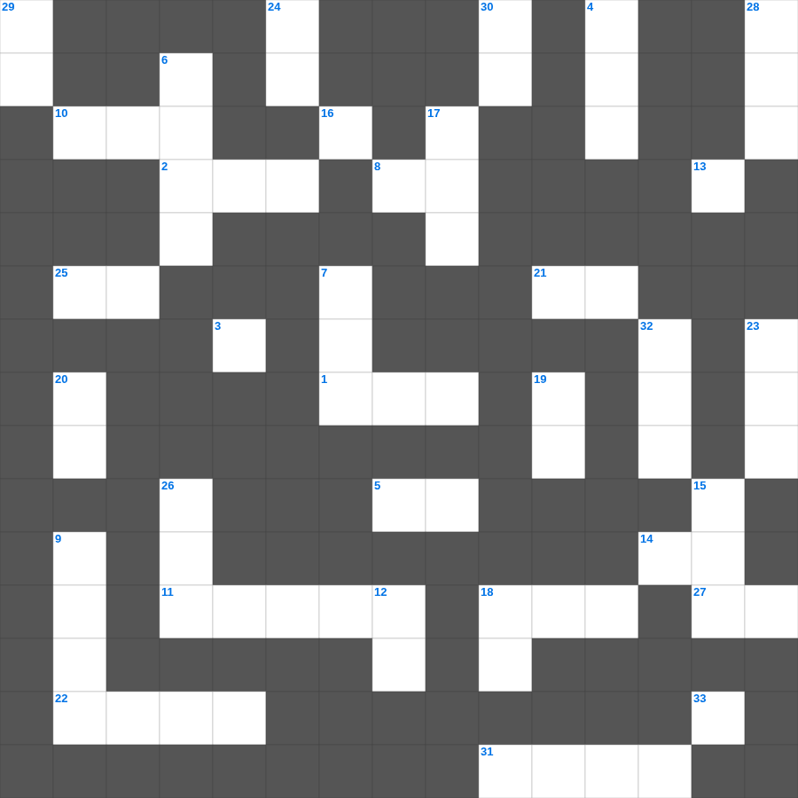

룻기 마스터 50
📌 서비스 정의
십자가로세로는 교회 주보와 주일학교에서 사용할 수 있는 성경 기반 가로세로 퍼즐 서비스입니다. 성경 인물, 사건, 핵심 구절을 바탕으로 제작되었습니다. 온라인 풀이 및 인쇄 기능을 제공합니다.
📖 룻기란?
룻기는 베들레헴으로 이주한 모압 여인 룻과 시어머니 나오미, 그리고 보아스의 이야기를 담은 4장의 짧은 책입니다.
📚 룻기의 주요 사건·주제
나오미와 룻의 모압살이 · 이삭 줍는 룻 · 보아스의 친족 구속 · 룻과 보아스의 결혼 · 다윗의 족보로 이어짐
룻기를 주제로 한 룻기 성경공부 자료입니다. 35개의 단어를 맞춰보세요! 가로세로 낱말 퍼즐 형식으로 룻기의 핵심 내용을 재미있게 복습할 수 있습니다.

📝 가로 힌트
1. 이스라엘의 3대 절기 '유월절, 칠칠절, 이것'
2. 솔로몬 왕이 이것 나무로 자기의 가마를 만들었는데
5. 성령의 은사 중 병 고치는 은사, 능력 행함, 이것 함, 영들 분별함 등
8. 오직 믿음으로 구하고 조금도 이것하지 말라
10. 성전 건축을 방해하기 위해 뇌물을 준 사람들
11. 아간과 그 가족들이 심판받은 골짜기
13. 급한 마음으로 노를 발하지 말라 노는 우매한 자들의 이것에 머무름이니라
14. 예수께서 마태의 집에서 앉아 음식을 잡수실 때에 많은 이것와 죄인들이 와서
18. 너희는 건포도로 내 힘을 돕고 사과로 나를 시원하게 하라 내가 이것이 생겼음이라
21. 고레스 왕이 성전 건축을 위해 백성들에게 도와주라고 한 것
22. 아사셀 염소는 어디로 보내는가
25. 너는 나를 이것 같이 마음에 품고 도장 같이 팔에 두라
27. 성찬식의 제정: 이것은 너희를 위하는 내 몸이니 이것을 행하여 나를 이것하라
31. 율법책을 들고 백성들을 가르치게 한 남유다의 선한 왕
33. 나의 사랑 너는 어여쁘고 아무 이것이 없구나
📝 세로 힌트
3. 배와 넓적다리는 놋이요 그 종아리는 이것이요
4. 그들의 총명이 어두워지고 그들 가운데 있는 무지함과 그들의 마음이 이것함으로 말미암아 하나님의 생명에서 떠나 있도다
6. 미가 5:2에서 예언된 메시아의 탄생지
7. 나병 환자의 정결 예식에 쓰이는 붉은 실과 이것
9. 스가랴가 본 환상 중 순금 등잔대 곁에 있는 두 나무
12. 빌레몬서 1장 22절: 너희 이것으로 내가 너희에게 나아갈 수 있기를 바라노라
15. 지혜에 관한 지식이 더 유익함은 지혜가 그 지혜 있는 자를 이것 하기 때문이니라
16. 백성들이 땅을 차지하고 얻은 것 '풍부한 이것'
17. 구원의 투구와 의의 이것
18. 그들이 교회 앞에서 너의 이것을 증언하였느니라
18. 내가 사람의 방언과 천사의 말을 할지라도 이것이 없으면 소리 나는 구리와 울리는 꽹과리가 되고
19. 디모데 속에 있는 은사를 다시 불일듯 하게 하기 위해 바울이 행한 것
20. 야곱의 가족들이 정착한 애굽의 땅
23. 모세가 미디안에서 낳은 첫 아들
24. 내 사랑하는 자야 너는 이것 달려라 향기로운 산 위의 노루와도 같고 어린 사슴과도 같아라
26. 하박국이 예언한 이스라엘을 징계할 도구 (사납고 성급한 백성)
28. 다투었다는 뜻의 반석 샘물 지명
29. 내 아들아 그러므로 너는 그리스도 예수 안에 있는 이것 가운데서 강하고
30. 너희는 산에 올라가서 나무를 가져다가 이것을 건축하라 그리하면 내가 그것으로 말미암아 기뻐하고
32. 하나님은 이스라엘의 이것이 되시려고 애굽에서 인도하심
🧩 이 퍼즐에서 배우는 내용
이 퍼즐은 룻기 마스터 50의 핵심 단어와 개념을 자연스럽게 복습할 수 있도록 구성되었습니다. 주일학교 수업이나 개인 성경공부에서 학습 내용을 점검하는 용도로 바로 활용할 수 있습니다.
🧑🏫 교회 교육 자료 활용
이 퍼즐은 주일학교 교재 추천 자료로 활용할 수 있고, 주일학교 주보에 넣기 좋은 분량으로 구성되어 있습니다. 수업용 주일학교 교안에 활동지로 붙이거나, 예배 후 복습용 주일학교 공과교재로 바로 사용할 수 있습니다.
🏷️ 키워드
룻기 성경공부 자료, 룻기, 십자가로세로, 성경퀴즈, 말씀퀴즈, 가로세로퍼즐, 주일학교 교재 추천, 주일학교 주보, 주일학교 교안, 주일학교 공과교재